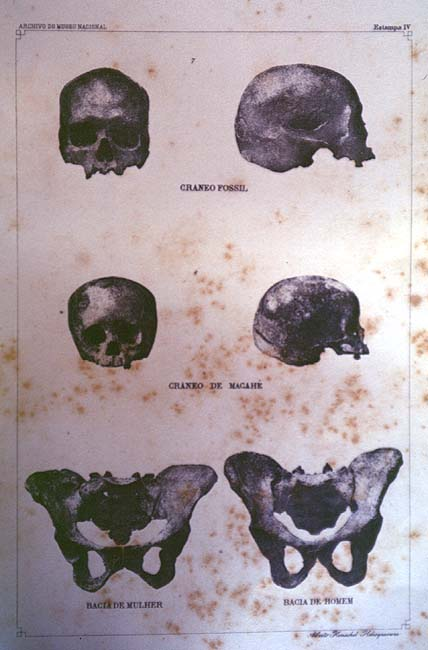

| The indigenous other |
|  |
| J. Baptista de Lacerda, Contributions to the Anthropological Study of Brazil's Indigenous Races |
Whereas archaeologists concerned themselves with recovering the material traits of pre-Conquest cultures, anthropology as practiced in the late nineteenth century was primarily focused on the physiological study of native bodies, living and dead. Disciplines such as craneometry and osteology (the measuring and classification of skulls and selected parts of the human skeleton) catered to a rising interest in the evolution of the human species from its earliest ancestors. South American anthropologists such as Francisco P. Moreno in Argentina and Joao Baptista de Lacerda in Brazil were influential contributors to debates in the field on whether humanity had descended from one or several biological roots. Whilst few if any contenders questioned the innate superiority of Europeans and their descendants over all other "races", there was nonetheless a tension between those who searched for a bygone "Golden Age" of Native American civilization in the tropics (such as Ladislau Netto, the director of Rio de Janeiro's National Museum and chief organizer of its Anthropological Exhibition) and those who, like his successor Lacerda, ranked Brazil's "prehistoric" inhabitants and their present-day descendants as an inferior species. Lacerda, incidentally, represented Brazil at the 1911
International Conference on Race in London, where he forespelled the comprehensive "whitening" of the Brazilian population by the mid-twentieth century.
.